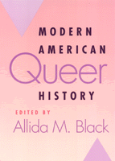

<body bgcolor="#FFFFFF" text="#000000" link="#0000FF" vlink="#CC0000" alink="#CC0000"><center><hr width="350" size="1" align="center" noshade>Essays considering the history of queer lives in America<hr width="350" size="1" align="center" noshade><p><a href="https://cdcshoppingcart.uchicago.edu/Cart/ChicagoBook.aspx?ISBN=9781566398718&&PRESS=temple" target="_top">Buy this book!</a> | <a href="https://cdcshoppingcart.uchicago.edu/Cart/Cart.aspx?PRESS=temple" target="_top">View Cart</a> | <a href="https://cdcshoppingcart.uchicago.edu/Cart/Cart.aspx?PRESS=temple" target="_top">Check Out</a></p><p></p></center><!--none//--><h1>Modern American Queer History</h1>
<h3>edited by Allida M. Black</h3>
<P>cloth 1-56639-871-1 $85.50, Aug 01, <FONT COLOR=#990033>Available</FONT>
<br>paper 1-56639-872-X $32.95, Aug 01, <FONT COLOR=#990033>Available</FONT>
<BR> 312 pp
7x10
1&nbsp;figure 2&nbsp;halftones
</P><BLOCKQUOTE><I>"This important collection brings together classic essays with new scholarship in a bold effort to reconfigure the field of lesbian and gay history. Lucid and comprehensive, the book will appeal not just to scholars and students, but to a crossover audience of general readers."</I>
<br>&#151<b>Paula Martinac</b>, author of <I>The Queerest Places: A Guide to Gay and Lesbian Historic Sites</I><I></I></BLOCKQUOTE>
<p>In the twentieth century, countless Americans claimed gay, lesbian, bisexual, and transgender identities, forming a movement to secure social as well as political equality. This collection of essays considers the history as well as the historiography of the queer identities and struggles that developed in the United States in the midst of widespread upheaval and change.
<p>Whether the subject is an individual life story, a community study, or an aspect of public policy, these essays illuminate the ways in which individuals in various locales understood the nature of their desires and the possibilities of resisting dominant views of normality and deviance. Theoretically informed, but accessible, the essays shed light too on the difficulties of writing history when documentary evidence is sparse or "coded." Taken together these essays suggest that while some individuals and social networks might never emerge from the shadows, the persistent exploration of the past for their traces is an integral part of the on-going struggle for queer rights.
<BR>&nbsp;<h2>Excerpt</h2><P>Excerpt available at <a href="http://www.temple.edu/tempress">www.temple.edu/tempress</a></p>
<BR>&nbsp;<h2>Reviews</h2>
<p><i>"This book is recommended for the queer and unqueer alike. Not only comprehensive and engaging, it also marks an important step in the ongoing effort to define and illustrate the idea of queer scholarship."</i>
<br>&#151<b><i>Committee on Gay and Lesbian History</i></b>
<p><i>"[T]his collection offers a more complicated portrayal of the middle of the century, the years between the depression of the 1930s and the social and political revolutions of the 1960s."</i>
<br>&#151<b><i>The Journal of American History</i></b>
<p>Read a <a href="../authors/1391_review.pdf">review</a> from <I>Rain Taxi</I>, written by Charisse Gendron (pdf).
<BR>&nbsp;<h2>Contents</h2><P>
<p>Acknowledgments
<br>Introduction
<p>1. Where Are We to Begin? &#150 John Howard
<p><b>Part I: Categories of Sexuality</b>
<br>2. Romantic Friendship &#150 Leila J. Rupp
<br>3. "Someone to Talk Our Language": Jane Heap, Margaret Anderson, and the Little Review in Chicago &#150 Holly A. Baggett
<br>4. The New Negro Renaissance, A Bisexual Renaissance: The Lives and Works of Angelina Weld Grimké and Richard Bruce Nugent &#150 Brett Beemyn
<p><b>Part II: Evidence, Narrative, and Biography</b>
<br>5. "The Burning of Letters Continues": Elusive Identities and the Historical Construction of Sexuality &#150 Estelle B. Freedman
<br>6. Paula Snelling: A Significant Other &#150 Margaret Rose Gladney
<br>7. Homophobia and the Trajectory of Postwar American Radicalism: The Career of Bayard Rustin &#150 John D’Emilio
<p><b>Part III: Science, Fictions</b>
<br>8. Perverting the Diagnosis: The Lesbian and the Scientific Basis of Stigma &#150 Allida M. Black
<br>9. "A Thought a Mother Can Hardly Face": Sissy Boys, Parents, and Professionals in Mid-Twentieth-Century America &#150 Julia Grant
<br>10. Something They Did in the Dark: Lesbian and Gay Novels in the United States, 1948-1973 &#150 Chris Freeman
<p><b>Part IV: Community, Institutions</b>
<br>11. Rizzo’s Raiders, Beaten Beats, and Coffeehouse Culture in 1950s Philadelphia &#150 Marc Stein
<br>12. Black Feminist Organizations and the Emergence of Interstitial Politics &#150 Kimberly Springer
<br>13. Protest and Protestantism: Early Lesbian and Gay Institution Building in Mississippi &#150 John Howard
<p><b>Part V: Public Debates and Public Policy</b>
<br>14. Health Care, the AIDS Crisis, and the Politics of Community: The North Carolina Lesbian and Gay Health Project, 1982-1996 &#150 Ian K. Lekus
<br>15. The Immigrant Infection: Images of Race, Nation, and Contagion in the Public Debates on AIDS and Immigration &#150 Jennifer Brier
<br>16. The Myth of Lesbian (In)Visibility: World War II and the Current "Gays in the Military" Debate &#150 Leisa D. Meyer
<p><b>Conclusion</b>
<br>17. Where Are We Now, Where Are We Going, and Who Gets to Say? &#150 Vicki L. Eaklor
<p>About the Contributors
</P><BR>&nbsp;<H2>About the Author(s)</H2>
<P><b>Allida M. Black</b> is Director and Editor of The Eleanor Roosevelt and Human Rights Project, as well as Research Professor of History, The George Washington University.</P>
<P>Contributors: Holly A. Baggett, Brett Beemyn, Jennifer Brier, Vicki L. Eaklor, John D’Emilio, Estelle B. Freedman, Chris Freeman, Margaret Rose Gladney, Julia Grant, John Howard, Ian K. Lekus, Leisa D. Meyer, Leila J. Rupp, Kimberly Springer, Marc Stein, and the editor.</P>
<BR><H2>Subject Categories</H2>
<p><A HREF="/tempress/history.html" TARGET="_top">History</a>
<BR><A HREF="/tempress/sexual.html" TARGET="_top">Sexuality Studies/Sexual Identity</a>
<BR><A HREF="/tempress/general.html" TARGET="_top">General Interest</a>
</p>
<BR><h2 class="inpageheading">In the series</H2>
<P><I><a href="http://www.temple.edu/tempress/critical.html" onMouseOver="window.status='Click for other books in this series!'; return true;" onMouseOut="window.status=''; return true;" target="_top">Critical Perspectives on the Past</a></i>, edited by <a href="http://www.temple.edu/tempress/authors/benson_memoriam.html" target="_top">Susan Porter Benson</a>, Stephen Brier, and Roy Rosenzweig.
</p><p><i>Critical Perspectives on the Past</i>, edited by Susan Porter Benson, Stephen Brier, and Roy Rosenzweig, is concerned with the traditional and nontraditional ways in which historical ideas are formed. In its attentiveness to issues of race, class, and gender and to the role of human agency in shaping events, the series is as critical of traditional historical method as content. Emphasizing that history is itself an interpretation of material events, the series demonstrates that the historian's choices of subject, narrative technique, and documentation are politically as well as intellectually constructed.</p>
<p align="center"><a href="https://cdcshoppingcart.uchicago.edu/Cart/ChicagoBook.aspx?ISBN=9781566398718&&PRESS=temple" target="_top">Buy this book!</a> | <a href="https://cdcshoppingcart.uchicago.edu/Cart/Cart.aspx?PRESS=temple" target="_top">View Cart</a> | <a href="https://cdcshoppingcart.uchicago.edu/Cart/Cart.aspx?PRESS=temple" target="_top">Check Out</a></p><p><font face="Arial" size="1"><a href="copyright.html" onMouseOver="window.status='Web Copyright Policy';return true;" onMouseOut="window.status=''" title="Web Copyright Policy">&copy;</a> 2015 <a href="http://www.temple.edu" target="new" onMouseOver="window.status='Link to Temple University home page';return true;" onMouseOut="window.status=''" title="Link to Temple University home page">Temple University</a>. All Rights Reserved. http://www.temple.edu/tempress/titles/1391_reg.html</font></p>